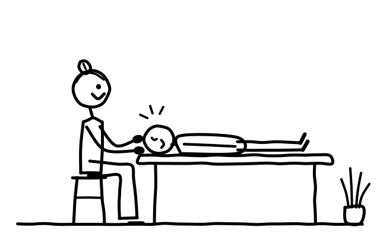

Polarity
Die erste Polaritybehandlung beinhaltet ein ausführliches Vorgespräch, bei Bedarf eine Haltungsanalyse sowie eine manuelle Behandlung auf der Liege.
Erste Behandlung: 90 Minuten, den Preis bestimmst du selbst.Danach 60 Minuten für 88 CHF (Ausbildungstarif).

So läuft eine Polaritybehandlung ab

Vorgespräch
Wir sprechen über dein Anliegen; bei Bedarf schaue ich mir deine Haltung an.

Körperarbeit auf der Liege
Polarity ist die Arbeit am bekleideten Körper mit sanften, schaukelnden/bewegenden oder tief ins Gewebe gehenden Berührungen.
Übungen für den Alltag
Eine individuelle und gezielte Auswahl an Yogaübungen vertieft die Wirkung der Behandlung und hat den Vorteil, dass sie als Selbsthilfe angewendet werden kann.
«Ich halte mich an das, was die Natur mir bestätigt.»
Eine Polaritybehandlung ist eine Investition in deine Gesundheit sowie persönliche Weiterentwicklung. Du darfst am Ende selber entscheiden, wie viel dir diese erste Polarityerfahrung finanziell wert ist.
Polarity …
- Ist eine Synthese von östlicher und westlicher Medizin, wobei die Ganzheit von Körper, Geist und Seele im Vordergrund steht.
- Wurde vom Naturheilarzt, Osteopathen und Chiropraktiker Dr. Randolph Stone (1890–1981) gegründet.
- Geht der Frage nach, was hinter den Erscheinungen (Symptomen) steckt: Wo liegen die tieferen Ursachen und Hintergründe von Gesundheit und Krankheit? Um was geht es wirklich?
- Möchte die Selbstheilungskräfte anregen und die körpereigene Abwehr stärken.
- Beinhaltet Körperarbeit, Körperübungen, Ernährung sowie die Auseinandersetzung mit Lebensstil, Denk- und Verhaltensmustern im begleitenden Gespräch.
- Wird von den meisten Krankenkassen als Komplementärtherapie anerkannt.
Mehr zu den einzelnen Teilen
Körperarbeit
Polarity ist die Arbeit am bekleideten Körper mit sanften, schaukelnden/bewegenden oder tief ins Gewebe gehenden Berührungen.
Begleitendes Gespräch
Das begleitende Gespräch unterstützt und orientiert die Prozesse, welche sich während der Körperarbeit zeigen können. Dadurch können sich tieferliegende Muster und/oder Traumata lösen.
Durch sprachliche Reflexion lernen wir uns besser kennen, spüren unsere Bedürfnisse klarer und finden Worte für innere Zustände und Empfindungen. Dadurch übernehmen wir stetig mehr Eigenverantwortung. Dies führt zu Selbstvertrauen und Akzeptanz unserer eigenen Individualität. Mit der Sprache begleiten wir, und Worte führen zu mehr Bewusstsein.
Yoga
Eine individuelle und gezielte Auswahl an Yogaübungen vertieft die Wirkung der Behandlung und hat den Vorteil, dass sie als Selbsthilfe angewendet werden kann.
Ernährung
In der Polarity-Lehre gelten ungünstige Ess- und Lebensgewohnheiten als Nährboden für Beschwerden und Krankheiten.
Mit der Ernährung beeinflussen wir in direkter Weise unser Befinden. Die Polarity-Ernährung hat zum Ziel, das Ernährungsbewusstsein zu fördern, indem Zusammenhänge zwischen Verhalten, Befinden und Essgewohnheiten ergründet werden. Das Ziel ist somit eine Ernährungsweise zu finden, die den Gesundheitsprozess unterstützt.
Polarity Reinigung
Die Polarity Reinigung ist eine Ernährungskur, die Leber, Nieren, die Verdauungsorgane, die Haut und das Bindegewebe entlasten soll. Ihr Ziel sind ganzheitliches Wohlbefinden und innere Ruhe.
Die Reinigung im Rahmen einer Ernährungsdiät kann als Kur fern vom Alltag oder auch zuhause durchgeführt werden.
Haltung der Therapeutin
Achtsamkeit, Empathie und Respekt sind die Basis, um eine wohlwollende und sichere Umgebung im Therapieraum zu schaffen.
Polarity kennenlernen
Bei der ersten Polaritybehandlung entscheidest du am Ende selbst, wie viel sie dir wert ist.
Erste Polaritybehandlung buchen